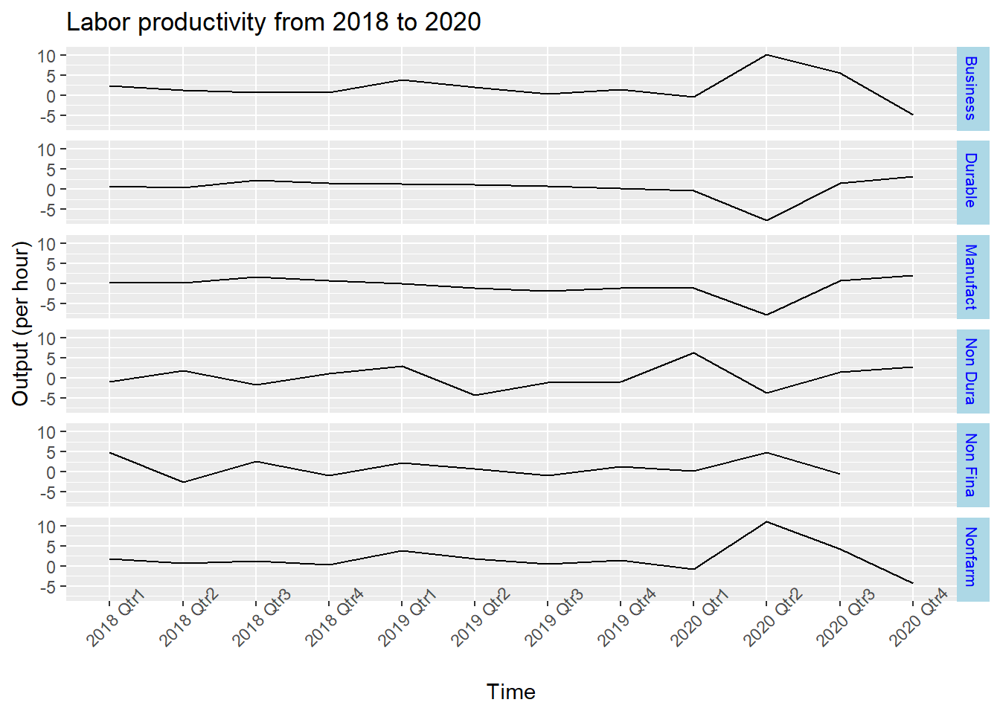
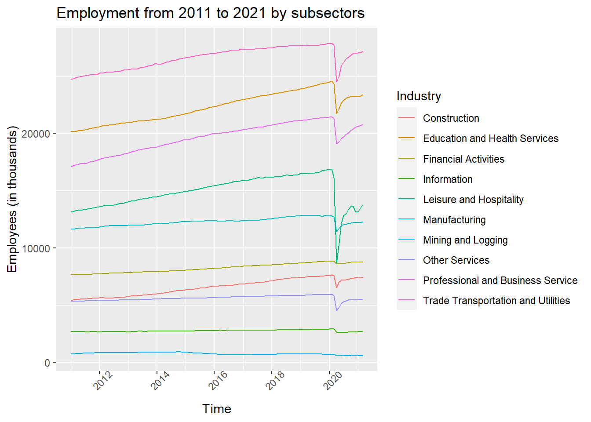

Chapter 5 Results
5.1 Part I: Employees before and after COVID-19
Overall, the general population of telework employees tend to increase over the last 10 years. Among all the sectors being investigated, Service and Management,Business and Financial Sector seemed contribute to the increase in work-from-home employees’ population the most.

The plot above shows the fluctuation of growth rate with WFH population within selected Sectors over years. We can see that some Sectors, such as Construction, Production, Office and Administration, Services and Transportation seem to have high volatility in the changes of WFH population percentages, with fluctuation ranging between -0.5% to 1%. Management, Business, Financial and Professional Sectors seem to have less fluctuation in the change of rate.

In general, we can see that the increase of telework population due to covid has a greater portion among the number of all employed workers starting from May 2020 and its proportion started to decrease as time pass by. Even though we could not get the data before May 2020, this trend may suggest that at the beginning of 2020, when COVID had just begun, the ratio of covid-lead WFH population over the total employed population would be even higher. Another trend we can see from the graph is that the total employed workers’ number is gradually increasing.
5.2 Part II: Productivity
5.2.1 Labor Productivity

From the time series plot and subplots, we can see that the output has a abrupt change at 2020 first and second quarter. Manufacturing and Durable Goods sectors have a sudden decrease and other sectors had a sudden increase. This might be caused by the increasing number of Work From Home employees.
5.2.2 Work hours
Then we check work hours from 2018-2020. Work hours have apparent decrease for all sectors in the first quarter of 2020. This shows an opposite trend with productivity.
5.2.3 Unit labor cost
We check unit labor cost from 2018-2020 and find the costs increase a lot in 2020 first quarter. Since three time series plots all show that there is a sudden change at 2020 first quarter, the pandemic could be the cause.
5.2.4 Relationship between Producitivity and Work From Home employees
The graph represents the percentage of Work From Home Employees change due to the pandemic. There is a decreasing trend from May to October and lines slightly back up in November and December.
From the previous sections, we find that Work hours decrease and production increase in first and sector quarter of 2020. This means that the efficiency has increased, which might be caused by teleworking. Hence, we make a scatter plot to illustrate the relationship between Productivity and WFH employees. The scatterplot indicates that there is a positive correlation between two variables. As the percentage of WFH employees increase, the Productivity tends to increase.
5.3 Part III: Employment and earnings
5.3.1 Employee numbers

From the time series plot for different sectors and sub-sectors, we can see that for all the industries, there was an abrupt drop in employees number at the beginning of 2020, around the time of March when the pandemic started spreading across the US. The only industry that did not fluctuate much is Utilities. This shows that this industry provides stable jobs.